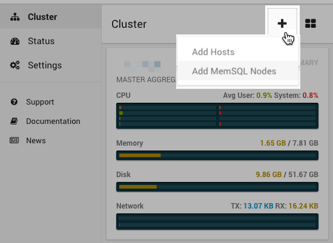

On-Premises Deployment¶
The fastest way to deploy MemSQL on-premises is using MemSQL Ops, the MemSQL-supported tool for installation, configuration, management and monitoring of MemSQL clusters.
To successfully run through these steps, make sure that you are running on a 64-bit Linux operating system. For a full list of MemSQL system requirements, see the System Requirements section.
For each host where you plan to install and run MemSQL, make sure ports 3306 and 9000 are open. Port 3306 is used by the MemSQL database, and port 9000 is used by MemSQL Ops.
Now you’re ready to set up your MemSQL cluster! Shown below is the startup screen of MemSQL Ops that explains how to set up a cluster.
Follow the steps below to set up your MemSQL cluster:
- Download latest version of MemSQL from the MemSQL download page. This will download the MemSQL Ops installer packaged as a compressed tar.gz.
- Choose one host in your intended MemSQL cluster to contain the primary MemSQL Ops agent.
- Unpack the compressed MemSQL Ops installer within your chosen primary host, which expands into the MemSQL Ops folder, memsql-ops-<version>.
tar zxvf memsql-ops-<version>.tar.gz
- Within that MemSQL Ops folder, run sudo ./install.sh. This will install MemSQL Ops on the primary host. Specifically, it will do the following:
- Setup the memsql user and group on the host
- Install memsql-ops in /var/lib/memsql-ops
- Set up MemSQL Ops to initialize at system startup
- Configure Linux system parameters that ensure optimal MemSQL database performance
- Once MemSQL Ops is installed on the primary host, the MemSQL Ops web interface will be accessible on http://<primary_host_name>:9000. Point your browser to that URL and follow the steps to configure additional MemSQL Ops hosts and finish configuring your MemSQL cluster.
Note
If you are not able to open the MemSQL Ops web interface URL, verify that port 9000 is accessible on your host. If it is not possible to expose port 9000, you can either:
- Run the MemSQL Ops agent on a different port and proceed with the installation process below.
- Install a MemSQL cluster on a single machine purely through MemSQL Ops command-line functions. This requires knowledge of the MemSQL Ops CLI.
- Install a MemSQL cluster manually without MemSQL Ops. This requires knowledge of manual MemSQL cluster configuration.
- MemSQL Ops will first ask if you would like to install the Enterprise or Community Edition.
If you choose the Enterprise Edition, MemSQL Ops will ask for a valid Enterprise license key. If you do not have one already, you can obtain an Enterprise trial license key either through memsql.com/download or by contacting your MemSQL sales representative.
Community Edition users do not need to specify a license key.
- MemSQL Ops will then ask if you would like to set up a “full cluster installation” or a “cluster in a box installation”.
A full cluster installation sets up a MemSQL cluster across several hosts. A cluster in a box installation sets up an entire MemSQL cluster with one master aggregator and one leaf node in a single host.
Setting up an entire MemSQL cluster using the cluster in a box option is possible and recommended for quick functional testing. That said, it is not recommended for production environments where performance and high availability are critical. When configuring a MemSQL cluster in a single box, it is important to ensure port numbers of MemSQL aggregator and leaf nodes do not conflict.
- If you choose the full cluster option, you will see the Add Hosts screen, where you can input information about your cluster.
Note
This step is skipped if the cluster in a box option is selected.
As is shown in the image above, this screen allows you to type in the hostnames, and the SSH access credentials - username, password and ssh private key. Through SSH, the primary MemSQL Ops agent will install itself into those other hosts.
You will then see a prompt that summarizes the hosts to be configured. You can edit the configuration to your liking. Once you are satisfied, click the Provision Hosts button. This will install the MemSQL Ops agent in each of the hosts.
You can add more hosts later by opening the Add Hosts screen at any time. Simply click the “+” button in the Cluster screen and select Add Hosts.
- Once hosts are set up, you can deploy MemSQL nodes. If you select the full cluster option, you should see the Deploy MemSQL screen immediately after you have configured hosts. Specifically, you will see a prompt that recommends a possible configuration (master aggregator, child aggregators, leaf nodes) for your cluster. You can edit the configuration to your choosing. Once you are satisfied, click Deploy MemSQL Cluster.
Note
If you selected the cluster in a box option, you will be placed directly into this step.

MemSQL Ops will then download the MemSQL database binary, install it on each host, and set up the MemSQL cluster according to your desired configuration.
Once this step is finished, you have successfully deployed a MemSQL cluster!
You can add more MemSQL nodes into existing hosts later by opening the Add MemSQL Nodes screen at any time. Simply click the “+” button and select Add MemSQL Nodes.
- To test that everything is set up correctly, connect to the master aggregator using any valid MySQL client driver. For example:
mysql -u root -h <master_aggregator_hostname> -P 3306 --prompt="memsql> "
You can now start creating databases and querying MemSQL! Here’s a set of sample commands to get you started. You can copy-paste these directly into your MemSQL session.
-- create a new user
grant all on *.* to 'myuser'@'%';
-- create a new database
create database mymemsqldb;
show databases;
use mymemsqldb;
-- create a new table
create table mytable (id INT PRIMARY KEY, name varchar(10));
show tables;
describe mytable;
-- perform data query operations
insert into mytable values (1, 'hello');
select * from mytable;
Should you run into any errors due to system configuration issues or constraints in your development environment, see the Offline Installation section for more information.
Next Steps